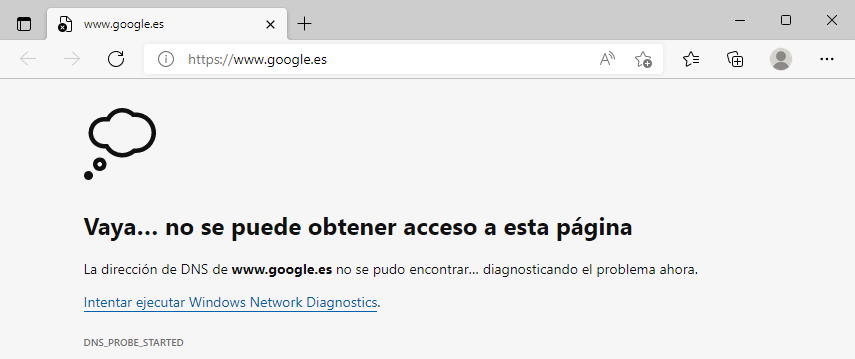
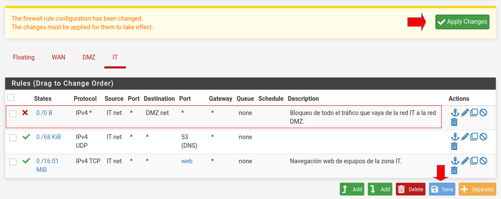
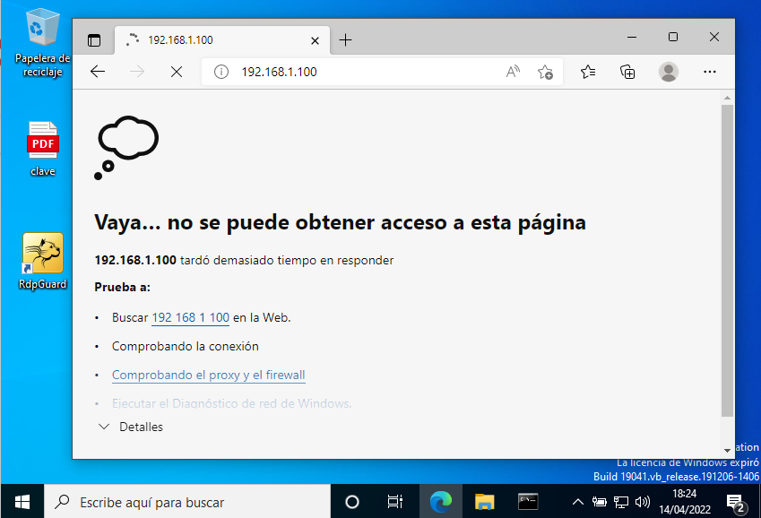

4.2 Configuración DMZ - Pfsense
1. Introducción
En este capítulo se verá cómo crear una DMZ desde un Firewall Pfsense que se creó en el capítulo 4.1. También, se verá como crear reglas en el Firewall.
2. Recursos necesarios y funcionalidades a conseguir
Recursos
- Máquina virtual Pfsense creada en el capítulo 4.1.
- Máquina virtual cliente (Ejemplo: kali Linux) en la red interna dmz y configurado el tcp/ip como automático.
- Máquina virtual Windows 10 en la red interna it.
Requisitos
En este escenario se tendrán 3 zonas: WAN, dmz e it.
- wan: Conexión con el proveedor de internet.
- dmz: Zona donde se alojan los servidores/servicios críticos.
- it: Zona donde a los equipos sólo se les permite el acceso a internet.
3. Etapas
Durante el laboratorio, se siguen una serie de etapas o pasos para conseguir las funcionalidades que se piden en el apartado 2:
- Configurar las Interfaces de red:
- Interfaz LAN: Cambiar el nombre a DMZ.
- Interfaz OPT1: Cambiar el nombre a IT y configurar ip estática a 192.168.100.254/24.
- Habilitar los servidores dhcp en las interfaces dmz e it.
- Configurar los equipos en la zona it.
4. Configuración de interfaces
En primer lugar, hay que realizar la configuración de las interfaces, y para ello, desde el menú Interfaces.
Figura 1. Menú interfaces.
Si se pulsa sobre 'LAN', aparece una página donde se puede realizar la configuración de esta interfaz. Para este caso, se cambia la 'Description' LAN por DMZ y el resto se deja igual.

Figura 2. Interfaz LAN.
Para continuar, hay que pulsar 'Save'. Aparece un mensaje en la parte superior (ver figura inferior) donde hay que pulsar en 'Apply Changes'.
Una vez se hayan aplicado los cambios, aparece un mensaje 'The changes have been applied successfully' indicando que se ha tenido éxito si todo ha ido bien.
A continuación, hay que acceder de nuevo al menú 'Interfaces' y seleccionar OPT1, que es la interfaz opcional em2 que se creó en el laboratorio 1. Para este caso, se cambia lo siguiente:
- Enable: Hay que seleccionarlo.
- Description: Se pone IT que es como se llamó a esta tercera red en el laboratorio 1.
- IPv4 Configuration Type: Se pone Static IPv4.
- IPv4 Address: Hay poner una ip estática de la red LAN, para este caso se pone 192.168.100.254 y que será la puerta de enlace de la red 192.168.100.0. En /, hay que poner la máscara que para este caso es 24.
Para guardar los cambios hay que pulsar 'Save'.
Figura 3. Interfaz OPT1.
Para guardar los cambios hay que pulsar 'Save' y luego en 'Apply Changes'.
Si se accede a la consola del pfSense, se puede comprobar que ya se tienen las 3 interfaces con la descripción, ip y máscara que se ha configurado anteriormente.
Figura 4. Consola de pfSense.
Si se accede al menú 'Interfaces' y se selecciona la opción 'Assignments', hay una opción interesante que está en la pestaña VLANs y que permite el marcado de VLANs.
Figura 5. Página de edición de interfaces.
Si se pulsa sobre 'Add', podría seleccionar en una o en todas las interfaces que se tienen para crear varias subredes utilizando VLANs. Ejemplo: Si se selecciona la red dmz, se podría crear una VLAN con id 10 y darle una prioridad y una descripción.
Figura 6. Página de edición de VLANs.
Volviendo a la opción 'Assignments', también se podría hacer un Bridge con la unión de varias interfaces, ejemplo: Si se desea que la interfaz DMZ e IT vayan en una misma red.
Figura 7. Página de edición de Bridges.
4. Configuración de los servidores dhcps
El siguiente paso es configurar los servidores dhcp y para ello, hay que acceder al menú 'Services' --> 'DHCP Server'.

Figura 8. Menú Services.
En este caso, hay que habilitar el dhcp para it con los siguientes datos:
- Enable DHCP server on IT interface: Habilitar.
- Range: 192.168.100.100 - 192.168.100.150
- DNS servers: 1.1.1.1 y 8.8.8.8
- Gateway: 192.168.100.254.
 |
|
| Figura 9. Configuración de los servidores DHCP - 1. | Figura 10. Configuración de los servidores DHCP - 2. |
{kind=link}
Esta opción de menú tiene muchas más opciones que en este escenario no son necesarias, pero que habría que estudiar dependiendo de lo que se quiera conseguir, ejemplo: En la sección 'Additional Pools', se tiene la posibilidad de crear un Pool si se desea subdividir el rango que se ha definido anteriormente en otros más pequeños, por ejemplo: se puede crear un pool para dar ip's en el rango 192.168.100-192.168-120 y otro para dar ip's en el rango 192.168.121-192.168-150.
Para guardar los cambios, hay que pulsar el botón 'Save' y si todo ha ido bien, aparece el siguiente mensaje: 'The changes have been applied successfully'.
Si ahora se accede a la pestaña de la 'DMZ', se puede ver que ya está configurado el servidor dhcp con el rango establecido, etcétera.
Figura 11. Configuración del servidor DHCP DMZ.
Por último, si se accede al menú 'Status' --> 'DHCP Leases', se pueden observar los clientes a los que se les ha asignado una ip con alguno de los servidores dhcp disponibles. Para este caso, al equipo kali se le ha asignado una ip del servidor dhcp de la dmz.
Figura 12. Página DHCP Leases.
Si se accede a la botonera 'Actions', se tienen dos posibilidades de mapeo de la asignación de la dirección ip: Asignación estática y mapeo con Wake On LAN.
Figura 13. Botonera Actions.
Como ejemplo, se podría realizar una asignación estática al equipo kali para que siempre le asigne esa dirección. O también, asignarla al mapeo Wake on LAN (protocolo que permite encender un equipo de forma remota, en este caso, se envía un Paquete Mágico WOL desde la vista Concesiones de DHCP).
En la parte superior derecha la figura 12, se tiene una botonera para gestionar los servidores dhcp, donde se pueden: parar, reiniciar, etcétera.
Figura 14. Botonera gestión de los servidores dhcp.
Hay muchos otros servicios (en el menú Services) como el de reenvío de DNS (DNS Forwarder), el de SNMP para enviar logs, el Wak on LAN que se ha comentado anteriormente, copias automáticas de backup, etcétera.

Figura 15. Menú Services.
Si se accede a la página principal, en la parte inferior derecha, ya se pueden ver las 3 interfaces que se acaban de configurar listas.
Figura 16. Interfaces de red.
5. Configuración de la zona IT
En este apartado, se añade un equipo Windows 10 en la zona IT y se le va a limitar el acceso a la red DMZ para que no pueda acceder a los servicios como por ejemplo: ssh y servidor web, dado que los equipos de la zona IT sólo se les permite el acceso a internet.
Figura 17. Adaptador de red de la máquina virtual Windows 10.
Una vez iniciado el equipo Windows 10, si se accede al menú 'Status' --> 'DHCP Leases', se puede observa que se le ha asignado una ip con el servidores dhcp de it.
Figura 18. Página DHCP Leases.
Por otro lado, si se realiza un ipconfig /all en el equipo Windows 10, se observa que ha obtenido ip, gateway y servidor dns primario y secundario, etcétera.
Figura 19. Información tcp/ip del equipo Windows 10.
Si se intenta acceder a internet, se observa que no se tiene acceso.

Figura 20. Error al acceder a internet.
Si se hace un ping al firewall, se observa también que no se tiene acceso ya que no se tienen reglas para permitirlo.
Figura 21. Ping al firewall.
Si se accede al menú 'Firewall' --> 'Rules' pestaña 'IT', se puede observar el mensaje 'No rules are currently defined for this interface' - 'All incoming connections on this interface will be blocked until pass rules are added. Click the button to add a new rule', donde se indica que se tienen todas las comunicaciones cortadas/bloqueadas.

Figura 22. Menú reglas del firewall.
Crear Regla y alias para los puertos
Lo que hay que realizar es crear una nueva regla, pero antes, hay que crear alias para los puertos ya que para navegar por internet se necesita el 80 y el 443 y para no tener que crear 2 reglas, se crea un alias con estos 2 puertos.
Para ello, hay que acceder al menú 'Firewall' --> 'Aliases' pestaña 'Ports' y pulsar el botón 'Add'. En la nueva página que aparece, se introducen los datos según se puede ver en la figura siguiente. Por último, para guardar los cambios, hay que pulsar el botón 'Save'.
Figura 23. Creación de alias para los puertos 80 y 443.
Una vez guardado el alias, hay que pulsar en 'Apply Changes'.
Figura 24. Aplicar los cambios.
Si todo ha ido bien, aparecen los mensajes: 'The changes have been applied successfully. The firewall rules are now reloading in the background. Monitor the filter reload progress'.
Una vez ya se tiene el alias creado, hay que acceder al menú 'Firewall' --> 'Rules' pestaña 'IT' y pulsar el botón de creación de una regla de permisividad y a continuación añadir lo siguiente:
- Action: Pass (de paso).
- Interface: IT.
- Source: any (de cualquier origen).
- Destination: any (destino cualquier sitio).
- Destination Port Range: From web To web (aquí es donde se añade el nombre del alias creado anteriormente).
- Description: Navegación web de equipos de la zona IT.
|
Figura 25. Configuración de la regla. |
|
Para guardar la regla, hay que pulsar el botón 'Save' y luego 'Apply Changes'. Si todo ha ido bien, aparecen los mensajes: 'The changes have been applied successfully. The firewall rules are now reloading in the background. Monitor the filter reload progress', y ya aparece la regla creada.
Figura 26. Regla creada.
Por último, hay que añadir una segunda regla para el puerto UDP 53 DNS para poder tener resolución de nombres.
| Figura 27. Configuración de la regla DNS. | |
Para guardar la regla, hay que pulsar el botón 'Save' y luego 'Apply Changes'. Si todo ha ido bien, aparecen los mensajes: 'The changes have been applied successfully. The firewall rules are now reloading in the background. Monitor the filter reload progress', y ya aparece la regla creada.
Figura 28. Regla DNS creada.
Ahora, si se accede al navegador del equipo Windows 10, ya se tiene acceso a internet, pero si se intenta realizar un ping, no funcionará ya que no se ha creado ninguna regla para permitir los paquetes ICMP.
Figura 29. Acceso a internet desde el equipo Windows 10.
Una buena práctica, sería limitar en las dos reglas que se han creado que el tráfico origen provenga de la red IT, para ello, en la botonera 'Actions' de la regla (hay que realizarlo en las 2 reglas que se tienen), hay que pulsar en el botón de edición (lápiz).
Figura 30. Botonera de las reglas.
Una vez se está en modo edición, hay que indicar que la fuente u origen sea de la red IT. A continuación hay que pulsar en 'Save' y luego en 'Apply Changes'.
Figura 31. Añadir la red IT como fuente u origen.
Una vez se ha establecido la fuente red IT en las dos reglas, sólo se permitirá el tráfico que provenga de la red IT.
6. Crear reglas de bloqueo
Si desde el equipo Windows 10 que está en la red IT se intenta acceder a la red dmz, por ejemplo, al servidor web alojado en el equipo 192.168.1.100 (kali linux) que pertenece a la red dmz, se puede ver que se accede sin problemas.

Figura 32. Acceso red dmz desde equipo en red IT.
La idea es crear una regla para impedir que se pueda acceder a los servicios de la red dmz ya que en esta red, es donde se encuentran los servidores y equipos críticos que se desean tener bajo protección. Para ello, hay que acceder al menú 'Firewall' --> 'Rules' pestaña IT y pulsar sobre el botón de crear una regla de denegación .
Figura 33. Añadir regla en IT.
Una vez se accede a la página de creación de la regla hay que configurar lo siguiente:
- Protocol: Any (hay que bloquear todo el tráfico).
- Source: IT net (origen de la zona IT).
- Destination: DMZ net (destino la zona DMZ).
- Description: Bloqueo de todo el tráfico que vaya de la red IT a la red DMZ.
| Figura 34. Crear regla IT. | |
Para guardar la regla, hay que pulsar el botón 'Save' y luego 'Apply Changes'. Si todo ha ido bien, aparecen los mensajes: 'The changes have been applied successfully. The firewall rules are now reloading in the background. Monitor the filter reload progress', y ya aparece la regla creada. Hay que moverla a la primera posición para que prevalezca la denegación de la regla sobre la permisividad de las otras 2 que se hicieron anteriormente.

Figura 35. Reglas creadas.
Ahora, si se accede desde el equipo Windows 10 de la red IT a un servicio de la red DMZ, por ejemplo, al servidor web (ver figura inferior) que está corriendo en el equipo Kali Linux que pertenece a la red DMZ, se puede observar que no se puede acceder debido a la regla que se ha creado anteriormente (Figura 34).

Figura 36. Error al acceder al servidor web de la DMZ.
Por defecto, si no se crean reglas de permisividad, todo el tráfico está bloqueado entre las redes.
7. Redirigir del exterior las peticiones a los servidores ftp y http
Para redirigir puertos en PFSense se puede realizar con UPnP y NAT-PMP, pero dado que UPnP es un protocolo que permite abrir puertos en el firewall de forma automática cuando lo solicita un cliente, esto no sería muy seguro por lo que no lo utilizaríamos.
La solución es abrir puertos en la NAT (Port forwarding), de esta manera, para acceder desde el exterior a determinados servicios como ftp, https, ssh, etcétera, hay que abrir diferentes puertos en la NAT para permitir iniciar la conexión.
Si se abren puertos en la NAT, pero se tiene el CG-NAT del operador, esto no funcionará.
El procedimiento es: Para abrir la NAT, lo primero que hay que hacer es ir a la sección de «Firewall / NAT», y en la pestaña de «Port forward» crear una nueva regla con lo siguiente:
- Interface: WAN
- Address Family: IPv4
- Protocol: Hay que elegir el que se necesite, ejemplo UDP si se tiene una VPN con Wireguard, TCP para el servidor FTP, etcétera.
Source: vacío - Destination: WAN Address
- Destination Port Range: Hay que poner un ranfo o el puerto en cuestión, ejemplo: Puerto 51400.
- Redirect target IP: type Single host, Address la dirección IP privada a la que quieres abrir el puerto.
- Redirect target port: debe ser el mismo puerto que en «Destination Port Range». Esta función, permite que de cara a la WAN se tenga abierto el 51400, pero de cara interno se pueda modificar al vuelo y usar el 51500, por ejemplo.
Hay que verificar que la NAT está realizada correctamente, en «Outbound» se puede verificar.
Por último, hay que comprobar que en «Firewall / Rules» y en la pestaña WAN está la regla que se acaba de crear en la NAT, es muy importante el orden de esta regla, si, por ejemplo, se tiene un «denegar todo» arriba después de las reglas de permiso, esta nueva regla se colocará abajo del todo, y se debe reordenar.
Recordamos que las reglas se analizan en serie, desde arriba hacia abajo, si ponemos una regla muy general arriba, y abajo las más específicas, estas últimas nunca se van a satisfacer, porque anteriormente se ha cumplido una regla más general.
8. Conclusiones
En este capítulo se ha conseguido aislar los servidores en una red dmz de los otros equipos de la organización, de esta manera, sólo los equipos deseados serán los que por medio de reglas, puedan acceder de manera selectiva a los servicios necesarios.
Obra publicada con Licencia Creative Commons Reconocimiento No comercial Compartir igual 4.0